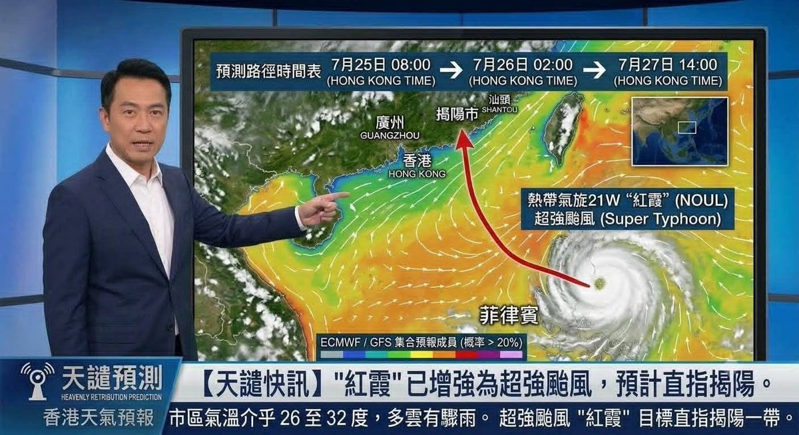

索瑟尔 𝓢𝓸𝓻𝓬𝓮𝓻𝓮𝓻🍥
@Sorcerer1311
今日首笑
噗哈哈哈哈哈

小貓看世界@子猫から見た世界
@lnyhu22806612
超強颱風「紅霞」已經於7月21日形成，預計會往廣東揭陽市（惡魔們的居住地）直撲而去。
旺旺，你看到了嗎？
老天爺在幫你報仇了！
那些惡魔、惡魔的母親、惡魔的家人，很快就笑不出來了。
時間：2026年7月22日。
#旺旺 #wangwang https://t.co/xxSL03nvg2 https://t.co/Jb92PrEUol